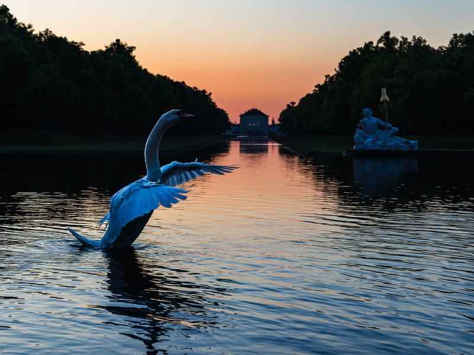
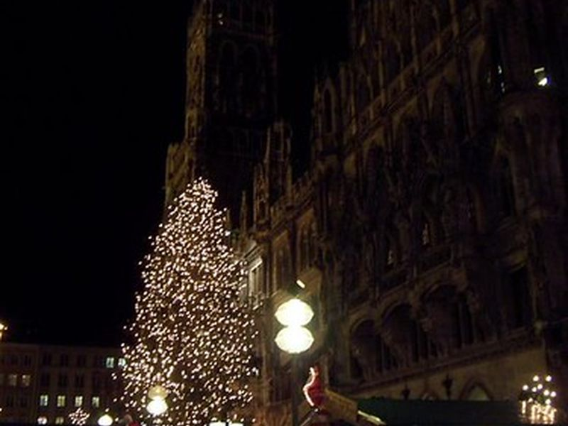
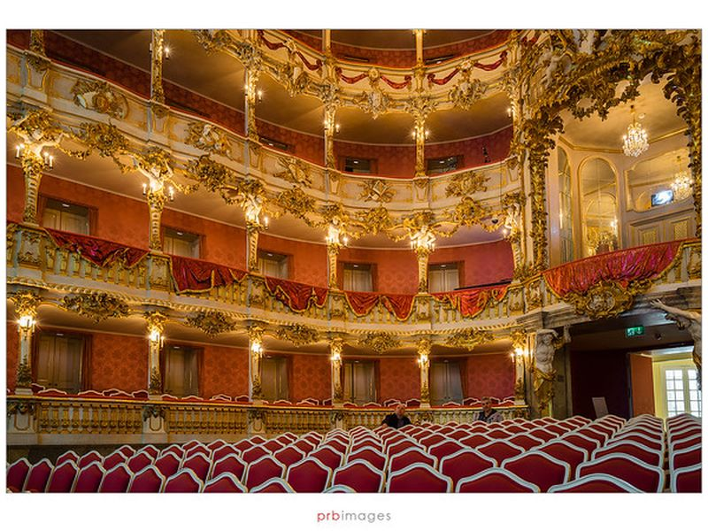
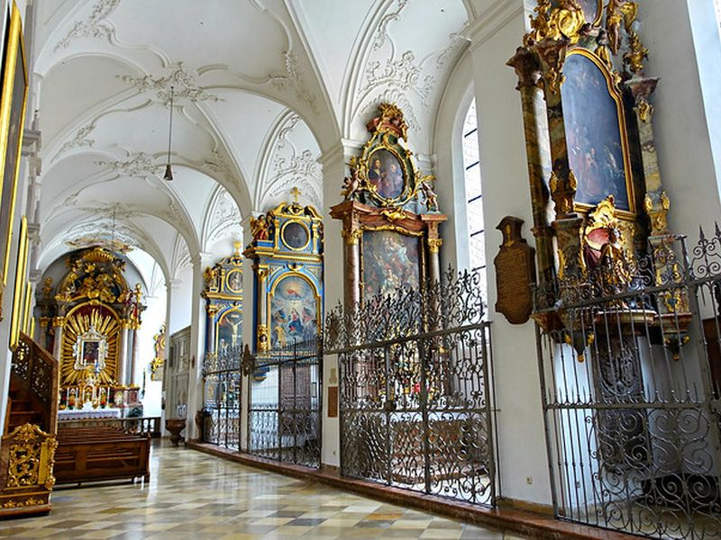
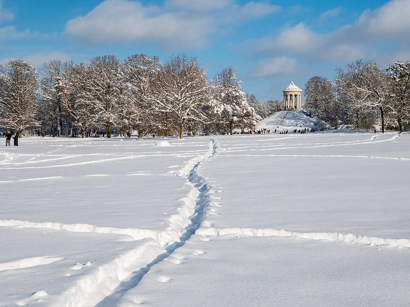
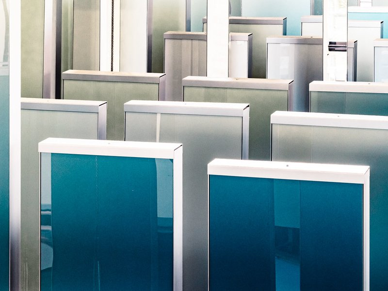
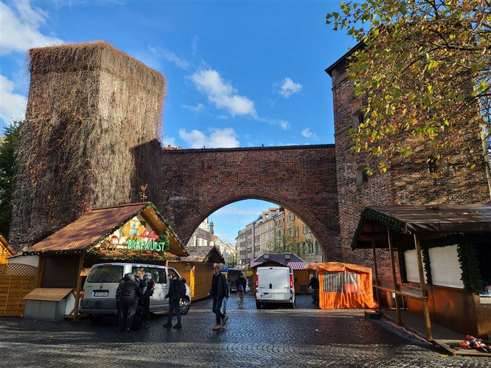
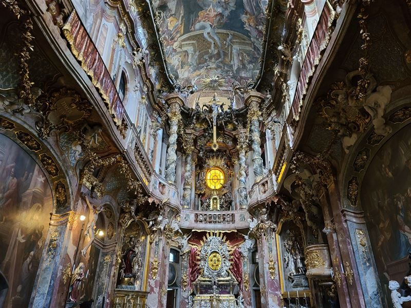
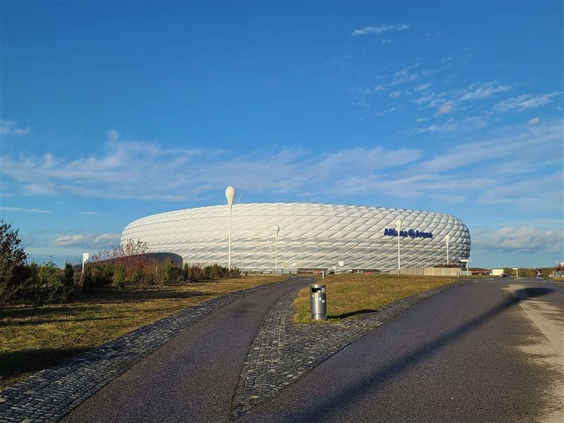

Explore Munich
A Brief History
Munich developed from a 12th-century market settlement under the Wittelsbach dynasty into the capital of Bavaria, with residence palaces, churches, and civic gates expanded through Renaissance and Baroque patronage. The 19th century added museums, boulevards, and the Oktoberfest tradition tied to a royal wedding celebration of 1810. Wartime destruction and postwar reconstruction reshaped parts of the center while preserving major dynastic monuments.
Attractions Map
Top Sights & Activities

Nymphenburg Palace
Nymphenburg Palace was begun in 1664 as a summer residence west of Munich and expanded into a Baroque complex with pavilions and canals. State rooms, the Gallery of Beauties, and park buildings trace Wittelsbach court life. The grounds remain open parkland popular for walks and museum visits.

Marienplatz and the New Town Hall
Marienplatz has been Munich's central square since the city's founding and is dominated by the Neo-Gothic New Town Hall completed in 1909. The Glockenspiel performs daily for crowds in the square below. Markets, festivals, and orientation for the old town still concentrate here.

Residenzmuseum (Munich Residence)
The Munich Residence was the seat of Bavarian dukes, electors, and kings from the 16th to the 19th century and now houses a museum of state apartments and treasuries. Rooms span Renaissance, Baroque, and Rococo decoration with collections of porcelain and regalia. The complex forms the core of the palace district east of Odeonsplatz.

St. Peter's Church (Peterskirche)
St Peter's Church, called Alter Peter, stands on the oldest parish site in Munich with a tower climb offering views over the center. The present building mixes Gothic and Baroque elements from centuries of rebuilding. It remains an active parish church steps from Marienplatz.

English Garden (Englischer Garten)
The English Garden was created from 1789 as a public landscape park north of the old walls, among the largest city parks in Europe. Meadows, streams, and the Chinese Tower beer garden draw residents and visitors year-round. It records how Munich expanded beyond its medieval limits for recreation.

BMW Museum and BMW Welt
BMW Museum and BMW Welt stand beside the Olympic Park in the north of Munich, presenting the company's vehicles, design, and engineering history. The bowl-shaped museum building and adjacent delivery center opened in the 2000s. The site connects Munich with postwar automotive industry and corporate architecture.

Sendlinger Tor
Sendlinger Tor is a surviving city gate of the late medieval fortifications, marking the southern entrance to the walled town. The twin towers and arch still frame a busy traffic axis into the center. It remains a reference point in Munich's historic street network south of Marienplatz.

Asamkirche
Asamkirche, dedicated to St Johann Nepomuk, was built in 1733–1746 by the Asam brothers as a private church attached to their house. Ceiling frescoes, sculpture, and gilded decoration fill a narrow plot on Sendlinger Straße. The church is a key example of Bavarian Baroque patronage in the dense old town.

Allianz Arena
Allianz Arena opened in 2005 in Fröttmaning as the home stadium of FC Bayern Munich and TSV 1860 München, seating about 75,000. Its inflated facade panels can be lit in team colors. Stadium tours and a museum explain the building's design and matchday operations.